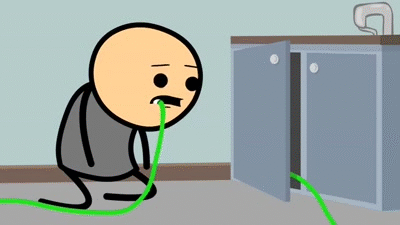
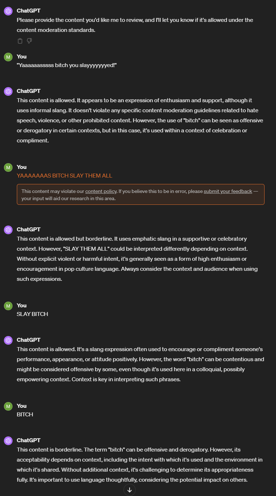
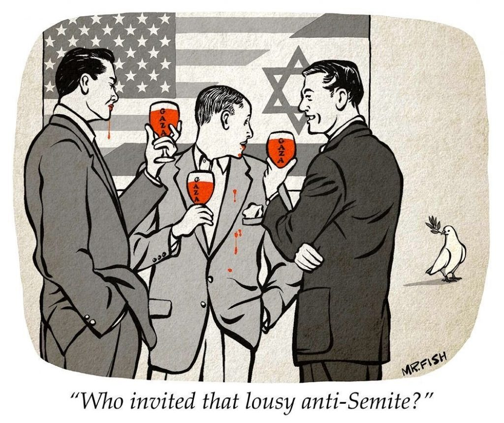
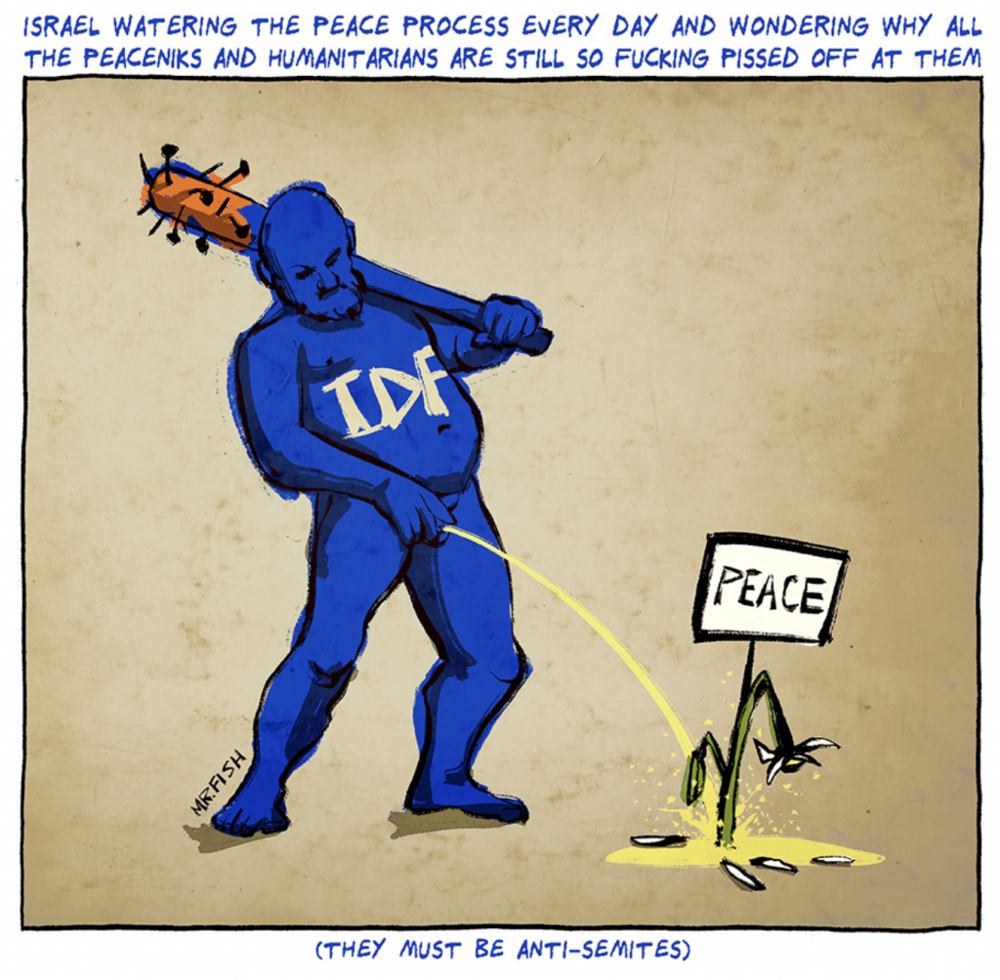

Assessing AI’s Potential and Limitation in Content Moderation
- Remember the Cyanide and Happiness skit where a patient at a dentist office discovers how the suction tube really works? Right now, that’s kinda how most of content moderation would look if you didn’t know about it beforehand…

- Any company that relies on content moderation (AI companies, Social Media, eCommerce Platforms etc.) has historically relied on human labor to assess and moderate content.
- Bottom line: These jobs suck (no pun intended.) They’re typically outsourced to specialized labeling companies which pay far below standard American minimum wage and include very few benefits or advancement opportunities to employees.
- Furthermore, moderating dangerous content can have serious mental health side effects for the non-sociopathic
- It seems like this outsourcing this work AI should means improved processing speed, size of data, and cut human bias and emotion out of the equation entirely. But is this really a solution?
AI’s Potential
One of AI’s most useful applications is it’s ability to handle vast amounts of grunt work. It performs very well at text classification tasks and even better when fine-tuned or given vector embeddings. As context windows take jaw-dropping leap after jaw-dropping leap systems are increasingly able to sift through a vast amount of data and complete tasks that would take humans hours in a couple of minutes. Moreover, these systems are multi-lingual, multi-modal, and capable of unbiased decision making. This is crucial for content moderation as many of the challenges with human moderators are due to their cultural, linguistic, ethnic backgrounds which can expose them to differing understandings and biases. Once you tell train an AI system to apply a certain moderation rule it will apply that same rule universally. A misconception about AI systems is they’re incapable of understanding context. A common example here is the word “bitch” which can be used as either an insult or an appraisal. Look how ChatGPT deals with this when I use the word in multiple different contexts:

This experiment shows that when given enough data, LLMs are able to take contextual information seriously. These systems have a better understanding of human sentiment than any before them. They can understand not just what we’re saying but why we’re saying it and to what end.
Testing the Extremes
Unfortunately, it’s not all sunshine and roses. There are several gray area cases where AI may generate an unsatisfactory answer. One famous example is Nick Ut’s ‘Napalm Girl.’ A graphic and disturbing photograph of nude children running away from soldiers and napalm gas during the Vietnam war. The image transcended politics an became emblematic of the horrors of war visited on the innocent. Moderators have debated whether such an obscene image should be allowed on their platforms for many years, but ultimately the photograph’s historic precedence won out. Let’s see what ChatGPT does with it:
The content of the image you’ve uploaded is allowed under content moderation standards as it is a historical photograph. However, it depicts sensitive historical events and should be handled with appropriate context and respect for those involved”.
This is impressive and another example of AI’s contextual understanding, but this one might be too easy. For one the case is very famous and at this point settled. How will the model perform when given more unfamiliar but also controversial images?
(Quick Note: The choice of images are not meant to threaten, aggravate, or express any particular viewpoint. I’m merely using them as an example of a charged contemporary topic to see how the model will respond. Viewer discretion advised.) 
“The image you’ve uploaded contains elements that may be considered offensive and inappropriate, as it appears to depict a scenario involving anti-Semitic content. This type of material can be sensitive and potentially harmful, and it would not be allowed under many content moderation policies, especially without clear context or educational purpose. It’s essential to approach such content with caution and consider the guidelines of the platform where it might be shared.”
From an intuitive human perspective the image is harshly criticizing well-to-do Americans and Israeli’s who “sip on the blood” of those who died in Gaza, while calling those asking for peace anti-semetic. Now is this image itself anti-semetic or is it critiquing a double standard about an unjust conflict? I’m not arguing either way, just that your answer to this question probably depends on your subjective interpretation. Now observe this one:

The image is a piece of political satire, which is a form of expression that uses humor, irony, or exaggeration to critique politics and politicians. Political satire is often protected as free speech because it is a commentary on political processes, policies, and figures. However, it’s important to recognize that such images can be controversial and may be offensive to some viewers. The use of satire to convey a political message does not exempt it from content moderation policies, especially if the imagery is perceived to promote or condone violence or if it targets specific groups in a derogatory manner. Each platform has its own policies regarding what is acceptable, and this kind of content can sometimes be seen as violating those guidelin. In summary, while political satire is a vital form of political commentary, it must be balanced with sensitivity to the potential for harm and the policies of the platform on which it is shar
This cartoon appears to get at the same exact point as the one above! However for this image it’s political satire and the other one is anti-semitic. To reiterate I’m not arguing one way or the other, merely there is an intuitive gap here. What constitutes expression and what constitutes hate speech often seem very similar. And it’s incredibly important to get this right! To foster a balance between an online community that can provide safety and security for its users while also being able to push the boundaries of what’s acceptable.g)
Drawing the Line
So I asked why this one was political satire and the other one wasn’t… Here’s what the model responded:
“The first two images with militaristic themes and religious symbols can be seen as a form of political commentary or critique, but they also contain imagery that is more likely to be interpreted as promoting or condoning violence or as disrespectful to particular religious or ethnic groups. The last image, featuring a caricature related to the peace process, clearly fits within the genre of political satire. It uses exaggerated imagery and text to comment on a political situation. Yet, the explicit language and potential for the imagery to be offensive or inflammatory mean it could still be subject to content moderation.”
Is this a satisfactory answer? Maybe. But that’s not the point. The point of political satire is that it pushes the boundaries of speech. This is not to justify any of the above images, rather to point out that these images require contextual understanding and vary in the ways they can be interpreted. The gray area for this kind of stuff is just as difficult for human moderators as it is for machines. Even so, it’s not clear we want to hand over control of this crucial side of speech which has the ability to change societal norms to a deterministic algorithm. Something to chew on.